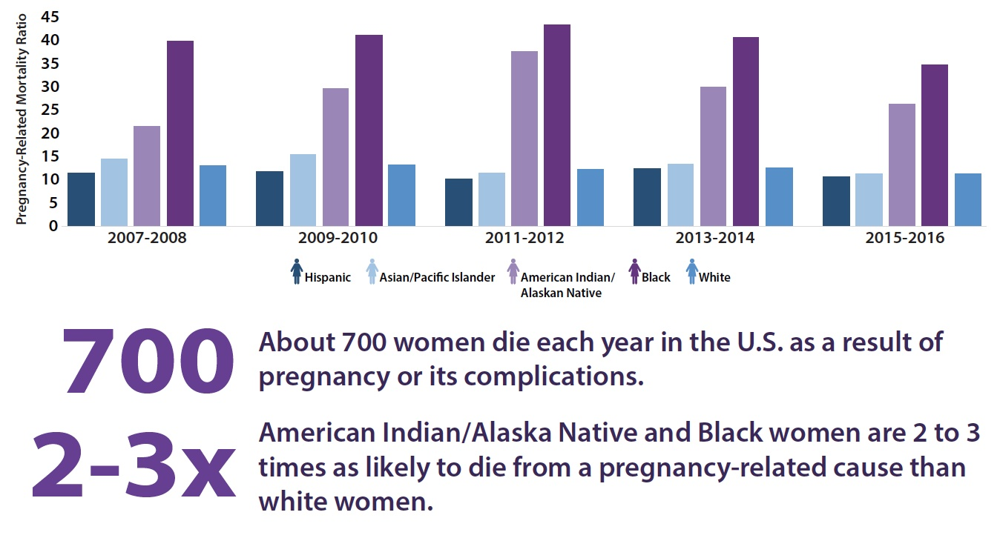

By: Jessica A Brown
January 2020 was the first time in over 10 years that the Center for Disease Control released a report, detailing maternal mortality rates through the National Center for Health Statistics (NCHS).
Historically, maternal mortality rates are harder to track because of inconsistent reporting across the country, but the organization recently adopted new coding procedures that help to more accurately identify women who are dying while pregnant and track women who are dying in childbirth.
The methods of collecting data on maternal mortality rates vary from state to state in the US, and are often seen as unreliable because of the small datasets. A state’s maternal mortality numbers determines the overall statistical variability of the data, when means that as the number of deaths decrease, the variance increases. For example, states with fewer than 20 deaths have more uncertainty and wider room for error. The CDC suppressed the numbers and rates for states with fewer than 10 deaths to protect the confidentiality of patients.
Here is a map showing the rate and number of maternal deaths across the US in 2018:
The States with the highest mortality rates for pregnant women are Arkansas (45.9%), Kentucky (40.8%), Alabama (36.4%), Oklahoma (30.1%)
The CDC reports that variation in the quality of reporting may vary between states due to the quality of reporting such as differences in electronic registration systems and differences in policies and programs designed to verify the pregnancy status of a deceased person. These differences can cause some states to underestimate maternal deaths in some cases, and overestimate in others.
The recently released data shows that the United States’ overall maternity death rate has increased to 17.4 per 100,000 live births (the rate was 12.7 in 2007). The data also reveals the wide racial and ethnic gaps that exist between African American, White, and Hispanic women.
According to research from the US National Library of Medicine, racial and ethnic differences in obstetric, perinatal, and neonatal outcomes in the US contribute to both maternal and neonatal morbidity and mortality. Researchers Eran Bornstein, Yael Eliner, Frank A. Chervenak, and Amos Grünebaum co-authored, “Racial Disparity in Pregnancy Risks and Complications in the US: Temporal Changes during 2007–2018” to evaluate the trends of several risk factors and complications among different racial/ethnic groups.
Based on their study, released in May 2020, research on pregnancy related racial and ethnic inequalities often focuses on maternal mortality, but there are likely visible signs earlier in the pregnancy.
Excerpted from the study: “Several studies have found significant differences in pregnancy related risks and complications among different maternal racial/ethnic groups. For example, Black women were found to be more likely than White women to suffer from pregnancy induced hypertension, chronic hypertension, preterm labor, antepartum and postpartum hemorrhage and peripartum infections, while Hispanic women were found to be at greater risk than White women for gestational diabetes, peripartum infections and postpartum hemorrhage.”
The CDC typically examines data related to hypertensive disorders of pregnancy (HDP), chronic hypertension (CH), diabetes mellitus (DM), advanced maternal age (AMA) and grand multiparity (GM) across all demographics of pregnant women to identify trends within the groups.